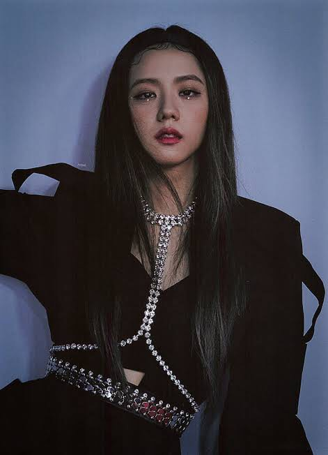
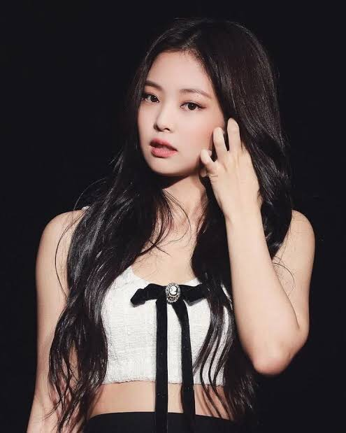
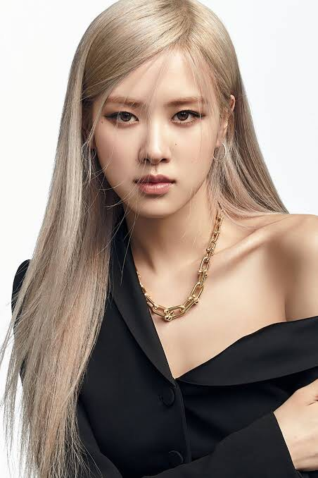
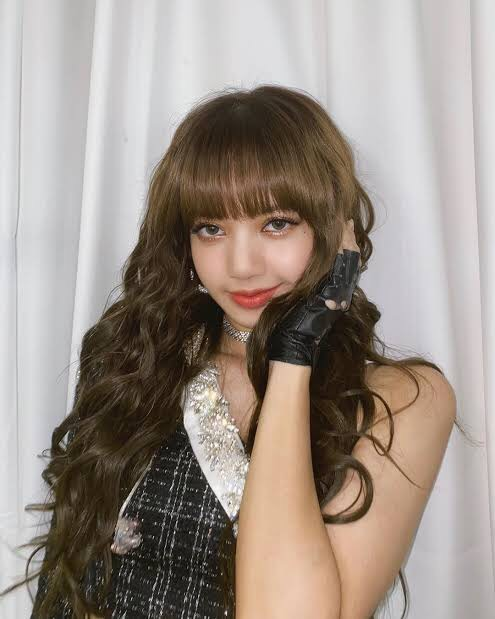

- Jisoo was born on January 3, 1995, in Seoul, South Korea.
- She joined YG Entertainment as a trainee in 2011 and trained for several years before debuting with BLACKPINK in 2016.
- Jisoo is known for her powerful vocals, visual appeal, and charming personality.
- Outside of music, she has also appeared in various television shows and endorsements.

- Jennie was born on January 16, 1996, in Seoul, South Korea.
- Like Jisoo, she trained under YG Entertainment for several years before BLACKPINK's debut.
- Jennie is recognized for her rap skills, strong stage presence, and fashion sense, often being a style icon.
- She has also ventured into solo music projects and has been involved in various fashion and beauty campaigns.

- Rosé was born on February 11, 1997, in Auckland, New Zealand, and grew up in Melbourne, Australia.
- She auditioned for YG Entertainment in Australia and moved to South Korea to train as a trainee.
- Rosé is the main vocalist of BLACKPINK, known for her soulful voice and ability to play the guitar.
- She has released solo music and collaborated with other artists, showcasing her versatility.

- Lisa was born on March 27, 1997, in Bangkok, Thailand.
- She auditioned for YG Entertainment in Thailand and became the first non-Korean member of BLACKPINK.
- Lisa is the main rapper and lead dancer of the group, known for her incredible dance skills and stage charisma.
- Outside of BLACKPINK, she has been involved in fashion, modeling, and philanthropic endeavors.